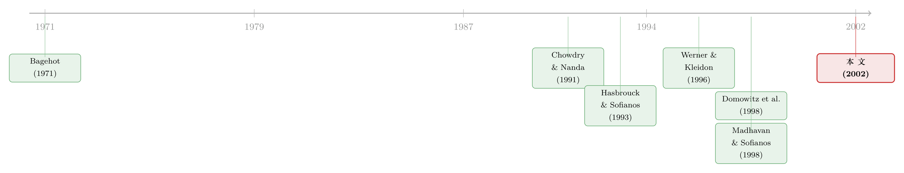

外资股票的价差更宽，可那不是宰客——它在替逆向选择买单
本文读的是 Bacidore & Sofianos (2002, Journal of Financial Economics)：用纽交所专家做市商的内部交易数据比较外国股票与匹配的美国股票，作者发现外国股票的价差更宽（报价价差 1.17% vs 0.69%）、深度更浅、波动更大；但当控制住价格、波动、规模的残差差异之后，做市商真正赚到的那部分「实现价差」不再有显著差异——外国股票更贵的成交成本，几乎全部是更高的信息不对称与逆向选择在买单，而非做市商在攫取市场势力。
1 一个被「400%」掀起来的问题
先看一个数字。从 1988 年到 1998 年这十年里，在纽约证券交易所（NYSE）挂牌的非美国公司，数量增长了 400%——从 77 家暴涨到将近 392 家。同期，美国本土公司的挂牌数只增长了 70%。换句话说，纽交所这块「全球最深的水池」，在十年间被外国股票以远超本土的速度灌满。
这就带出一个看似简单、其实并不容易回答的问题：这些外国股票，在美国到底是怎么被「做」出来的？
它们和美国本土股票，挂在同一个交易所、用同样的最小报价单位、在同样的 9:30 到 16:00 之间交易、用美元报价、走美国的清算结算系统。可它们骨子里是另一种东西。绝大多数外国股票在美国是以美国存托凭证（American Depositary Receipts, ADR）的形式交易的——一张由托管银行（比如 Bank of New York）买入母国普通股、再在美国发行的「替身证券」。这张替身「看上去、摸上去」都像一只美国股票，但它有两个致命的不同：第一，它不可互换（nonfungible），你不能在美国买进 ADR、再拿到母国市场卖掉；第二，它有一个活跃的母国市场，而那个市场的交易时间往往和纽约不重叠。
于是张力出现了。当纽约收盘、东京或法兰克福开盘，母国的价格在动，而美国的投资者却插不上手；当母国出了消息，等纽约开盘时，可能早有人据此布好了局。Domowitz、Glen 和 Madhavan（1998）把这件事讲得很清楚：当两个市场在信息上没有被「焊」得足够紧，套利者会利用市场之间的价差获利，而埋单的，是那些消息不灵通的流动性提供者。
所以一个自然的问题是：外国股票，是更难做、还是更好做？答案两可。一方面，ADR、市场割裂、时区错位，都意味着更高的库存持有成本和逆向选择，应该让它更难做、价差更宽；另一方面，如果外国股票吸引了更广的投资者群、引来了更激烈的跨市场竞争，它反而可能更好做、价差更窄。Werner 和 Kleidon（1996）就发现，在纽交所以 ADR 形式交易的英国股票，价差和未跨境上市的美国股票相当、甚至更小。
理论给不出唯一答案，那就只能去数据里找。
2 把镜头对准一个人：专家做市商
这篇论文最聪明的一步，是它没有泛泛地谈「流动性」，而是把镜头死死对准了一类特殊的人——纽交所的专家做市商（specialist）。
为什么是他？因为在纽交所的制度里，专家做市商不是一个普通的流动性提供者。他有对订单流的独家观察权，更重要的是，他背负着一组肯定性与否定性义务（affirmative and negative obligations）：他被要求维持价格连续性、在别人都撤退时充当「最后的流动性提供者」（liquidity provider of last resort）。Cao、Choe 和 Hatheway（1997）以及 Corwin（1999）都发现，不同的专家做市商会带来不同的交易成本——也就是说，这个人本身就影响着你的成交成本。
那么，一个会算账的专家做市商，面对一只「危险」的外国股票，会怎么调整自己的行为？作者提出三个可观测的动作：
- 他会不会少留库存——收盘时把头寸压得更接近零？
- 他会不会少参与——在更少的成交里插手？
- 他会不会少稳价——更少地在下跌时买进、上涨时卖出？
为此，作者动用了一份外人拿不到的内部数据：纽交所的「专家做市商权益交易汇总」（Specialist Equity Trading Summary, SPETS）文件，时间是 1998 年 7 月。他们用三把尺子来量专家做市商的行为：
- 绝对美元收盘库存——注意是绝对值，因为作者关心的是风险敞口的「大小」，而不是「方向」；
- 参与率（participation rate）——专家做市商的买入与卖出之和，除以总成交量（单边计）；
- 稳价率（stabilization rate）——专家做市商在下跌（downtick）时的买入量，加上在上涨（uptick）时的卖出量，再除以专家做市商的总成交量。
稳价率衡量的，恰恰是这个人「逆着市场走」、替市场吸收冲击的程度。
3 识别的关键：一只外国股票，配一只「双胞胎」美国股票
但这里有一道绕不过去的坎。外国股票本来就和美国股票不一样——它们也许更小、更便宜、更波动。如果你直接拿外国股票的价差去和「全体美国股票」比，得出「外国股票价差更宽」，那几乎什么都没说明：你分不清这到底是「外国」这个属性带来的，还是仅仅因为它们碰巧更小、更波动。
这就是这篇论文识别策略的核心：配对（matched-pair）。作者借鉴 Huang 和 Stoll（1996）的思路，为每一只外国股票，精心找一只在关键维度上几乎一模一样的美国「双胞胎」。具体做法是：先要求两者的纽交所行业代码前三位相同（同行业），再在价格、市值、以及日内与隔夜两种中间价收益波动率上做匹配。
为什么连「隔夜波动」都要单独匹配？因为这正是外国股票的命门：像日本股票，母国市场在美国闭市时仍在交易，会积累显著的隔夜价格波动。只匹配日内波动，你会系统性地漏掉外国股票最特别的那部分风险。
匹配的目标，是让每一只美国股票，在四个匹配变量上最小化与外国股票的相对偏离。作者沿用 Huang–Stoll 的形式，为每只外国股票寻找使下式最小的美国股票：
$$ \min \;\sum_{i=1}^{4}\left(\frac{X_i^{U.S.}-X_i^{Non\text{-}U.S.}}{\left(X_i^{U.S.}+X_i^{Non\text{-}U.S.}\right)/2}\right)^2 $$
其中 \(X_i^{U.S.}\) 与 \(X_i^{Non\text{-}U.S.}\) 分别是第 \(i\) 个匹配变量在美国股票和外国股票上的取值。而且这个最小化是带约束的——对每一个匹配变量 \(i\)，都要求相对偏离的绝对值小于 1：
$$ \left|\frac{X_i^{U.S.}-X_i^{Non\text{-}U.S.}}{\left(X_i^{U.S.}+X_i^{Non\text{-}U.S.}\right)/2}\right| < 1 $$
加这道约束，是为了不让某一只「凑合」的美国股票滥竽充数——配出来的样本，必须在每个维度上都足够像。
经过价格 $1–$500、剔除拆股、剔除日均成交少于两次等一系列过滤，最终留下 304 只外国股票；再要求每只都能找到合格的「双胞胎」，样本落定在 260 对。这之后，外国与美国之间剩下的差异，理论上就更接近「外国」这个属性本身了。
配对法的妙处，是把「比较」从「外国 vs 全体美国」收窄成「外国 vs 与它几乎一样的美国」。它不是万能的——下文会看到，残差里仍藏着没被磨平的差异——但它把问题逼到了一个干净得多的角落。
4 第一个发现：他确实把库存压平了
先看库存。结果很干净：所有条件相同时，外国股票的专家做市商收盘库存的绝对值，比可比美国股票小了约 60%。
这是一个非常符合直觉、却又十分有力的发现。一个面对 ADR、面对不可互换、面对时区错位的做市商，最怕的就是「过夜」——纽约收盘后，母国市场还在动，而他手里攥着一大笔头寸却无处对冲。于是他理性地选择：白天能做就做，收盘前尽量把头寸推回零。库存，是风险敞口最直接的度量，而做市商用脚投票，把它压到了美国股票的四成。
接着，一个自然的问题是：他参与和稳价的频率，是不是也跟着降了？
这里，故事第一次变得不那么简单。整体上看，外国股票和美国股票的参与率、稳价率没有统计上显著的差异。但一旦把样本拆成「发达市场」与「新兴市场」，一个有意思的格局浮现出来：发达市场的外国股票，参与率和稳价率反而高于美国股票；而新兴市场的外国股票，两者都显著低于美国股票。
按地区再切一刀，图景更立体：亚太地区和加拿大的股票，和美国股票几乎没差别；欧洲股票的参与率、稳价率显著更高；拉美股票的参与率则显著更低。加拿大与拉美的结果并不意外——加拿大以普通股而非 ADR 形式交易、和美国市场联系极紧，自然趋同；拉美作为新兴市场、信息联系松散，自然退缩。真正耐人寻味的是亚太：尽管交易时间完全不重叠，它的参与/稳价率却和美国相当——以及欧洲，竟然比美国还高。
所以「专家做市商面对外国股票就退缩」这个简单故事，只在新兴市场那一端成立。在发达市场那一端，肯定性义务似乎反而把做市商推上了前台——当其他来源的流动性变薄，他被制度要求着补位。
5 第二个发现，与那个真正的反转
现在轮到市场质量本身。结果朝着「外国股票更难做」一边倒：
- 报价价差（quoted spread）：外国股票
1.17%，美国股票0.69%； - 有效价差（effective spread）：外国股票
0.77%，美国股票0.45%； - 报价深度：外国股票比美国少了约三分之一；
- 波动率：外国股票几乎是美国的两倍。
价差更宽、深度更浅、波动更大——三件事整整齐齐。而且，无论发达还是新兴市场，外国股票的实现价差（realized spread）和逆向选择成分（adverse selection component）都比美国「双胞胎」更大。
到这里，故事似乎可以收尾了：外国股票更难交易，流动性提供者要价更高。但真正关键的一步，恰恰藏在最后这道控制里。
把有效价差拆开看：它大致等于「实现价差」加「逆向选择成分」。实现价差，是做市商落袋为安的那部分——可以粗略理解为他提供流动性的「净报酬」或「租金」；逆向选择成分，则是他被知情交易者「吃掉」的那部分损失。外国股票两样都更大，但这只是表象。
于是反转出现了。当作者进一步控制住外国股票与匹配美国股票之间残留的价格、波动、规模差异之后（配对再干净，也总磨不平最后一点尾巴），实现价差的差异不再显著了。
这句话值得停下来咀嚼。它的含义是：外国股票更宽的成交成本，不是做市商在攫取更高的租金——一旦把价格、波动、规模这些会自然抬高名义价差的因素剥干净，做市商真正赚到的那一块，外国和美国并无二致。剩下撑起价差的，几乎只有一样东西：更高的逆向选择。
换句话说，那道更宽的价差是「真的」，但它背后的「市场势力」是假的——价差更宽，是因为面对外国股票，做市商承受着更高的信息不对称风险，他多要的那点补偿，恰好够覆盖这份多出来的风险，不多也不少。这与近年信用市场里的发现遥相呼应：很多看似「贵」的价差，量到最后是逆向选择在抬价，而不是中介在收租（关于价差里「成本是真的、租金是假的」这层区分，可参见《价差是真的，成本却是假的——逆向选择究竟从哪里抬高了「要求回报」》）。
为什么外国股票的逆向选择更高？论文给了三条线索。其一，母国交易者相对美国交易者可能有信息优势——Choe 等（2000）记录了韩国交易者、Hau（2000）记录了德国交易者相对外国人的优势（不过「外资是否真的信息更差」本身是一桩公案，反方证据可参见《外资真有「信息劣势」吗？——首尔交易簿里那 37 个基点的真相》）。其二，按 Domowitz 等（1998）的逻辑，市场在信息上没被焊紧时，套利者的存在本身就会抬高流动性提供者承担的逆向选择。其三，Bhattacharya 和 Daouk（2000）指出，真正影响交易成本的不是内幕交易法律「存不存在」，而是它「执不执行」——而套利交易会把母国那点松弛执法下泄露的内幕信息，悄悄传导到纽约。
6 文献脉络
把这篇论文放回它的来路，能看得更清楚。
最上游，是 Bagehot（1971）那篇著名的《镇上唯一的游戏》（The only game in town）——它第一次把买卖价差拆出一块「逆向选择」，告诉做市商：你赔给知情交易者的钱，必须从不知情交易者身上挣回来。沿着「专家做市商有没有市场势力」这条线，Glosten（1989）、Brock 和 Kleidon（1992）讨论了垄断专家做市商如何借势抬高价差——这正是本文最后要排除的那个可能。
接着，是把专家做市商搬进真实数据的两篇奠基之作：Hasbrouck 和 Sofianos（1993）、Madhavan 和 Sofianos（1998）——它们建立了用库存、参与率刻画纽交所专家做市商的实证范式，本文的三把尺子，直接承自这条线。

另一条线，是「多市场交易」的理论与证据。Chowdry 和 Nanda（1991）论证了市场没被完美连接时，知情交易者如何在多个市场间放大利润；Domowitz、Glen 和 Madhavan（1998）则用一个新兴市场的跨境上市，把「订单流迁移 + 逆向选择」讲成了可检验的命题。方法论上，Huang 和 Stoll（1996）的配对比较法（原本用于 Nasdaq 与纽交所之争）被本文借来，造出了那 260 对「双胞胎」。而 Werner 和 Kleidon（1996）对英国跨境股票的日内研究，则是本文最直接的对照——它给出的「价差未必更宽」的结论，正是本文要去更细地拆解的对象。
本文站在这两条线的交汇处：它第一次用专家做市商的内部交易数据，把「跨境上市的流动性差异」从一个笼统的现象，分解成了库存、参与、稳价、价差、以及价差里的逆向选择——并指认出，差异的真正源头是信息不对称。沿着这条「股票挂到别国去、交易到底跟不跟过去」的脉络，本博客也有相关的讨论，可参见《把股票挂到美国去，交易真的会跟过去吗？》。
7 评论与延伸（Q&A + 研究方向）
(a) 几个可能的疑问
Q：配对法已经控制了价格、波动、规模，为什么最后还要再控制一次「残差差异」？这不是重复吗？
不重复。配对是「离散」的：每只外国股票只能找一只现实存在的美国股票，匹配再好，价格、波动、规模上也总留一点没磨平的尾巴。第一次比较用的是配对样本的原始差异，里面仍混着这些残差；第二次是在回归里把残差线性控制掉。正是这一步让实现价差的差异从「显著」变成「不显著」——所以它不是多余，而是把「外国 vs 像它的美国」进一步逼成「外国 vs 几乎等同的美国」。
Q：实现价差差异变得不显著，会不会只是因为控制变量太多、把统计功效耗光了？
这是个合理的担忧，单月（1998 年 7 月）样本本就不大。但要注意结论的结构：逆向选择成分在控制后依然稳健地更大，唯独实现价差变得不显著。如果只是功效问题，两块应该一起变糊，而不是一块塌、一块立。这种「非对称的塌陷」更像是真信号，而非纯粹的样本量不足。
Q：作者一边说外国股票价差更宽，一边说这反映了更高风险、是「必要的」补偿。这是不是在替做市商开脱？
论文很克制地把话说死在一处：它比较的是纽交所上外国股票与美国股票的质量，而不是外国股票在「纽交所 vs 母国市场」之间的质量。即便纽交所上外国股票价差更宽，它在母国可能更宽。所以「必要的补偿」是相对于风险而言的实证判断（实现价差无超额），不是规范意义上的「做市商无可指摘」——作者明确声明，他们不评判肯定性义务是否提升了社会福利。
Q：为什么新兴市场股票的专家做市商「退缩」（参与/稳价更低），发达市场反而「补位」（更高）？
一个自洽的解释是义务与成本的拉锯。肯定性义务要求做市商在流动性变薄时补位；但当做市成本高到一定程度，做市商可以选择「认罚」——宁可承受纽交所考评下降的代价，也不愿过度暴露。新兴市场逆向选择最重、母国联系最松，做市商更倾向认罚而退缩；发达市场风险可控，义务的拉力占了上风，于是补位。亚太股票尽管时区不重叠却不退缩，说明「时区错位」本身并非决定性，信息联系的紧密度才是。
Q：把绝对美元库存当风险敞口，会不会被「外国股票本来就更小」带偏？
这正是配对要解决的问题之一——市值已是匹配变量，双胞胎在规模上本就接近。所以
60%的库存收缩，不太可能只是「公司更小所以头寸更小」的机械结果，而更像做市商面对过夜风险的主动选择。当然，用绝对值会抹掉方向信息，无法回答「他是系统性偏多还是偏空」——这是它有意的取舍。
Q：这是 1998 年 7 月一个月的横截面，结论还站得住吗？
这是最该打的折扣。单月样本既排除了时间序列上的稳健性检验，也让结果可能受当月特定行情（1998 年正值新兴市场动荡）的影响——这恰恰会放大新兴市场股票的逆向选择。结论的方向大概率稳健（库存收缩、逆向选择主导），但具体量级需要在更长样本里复核。
(b) 几个可能的研究问题与提案
1. 把这套「库存—参与—稳价—逆向选择」分解搬到公司债的跨境/外资场景
【经济故事】公司债是 OTC 的、做市商库存约束极强的市场，且外资持有人占比在过去二十年大幅上升。外资持有的债券，是否也表现出「做市商库存更短、逆向选择成分更高」？这能把本文的股票结论迁移到信用市场，并直接连上「外资—流动性」这条线。
【可行性】中。TRACE 提供成交价与量，可用 size-adapted 流动性度量拆价差；难点在于债券层面缺少干净的「做市商库存」数据，且外资持有需借助 eMAXX/保险公司持仓等拼接。识别上可用同一发行人不同券别做配对，对冲发行人基本面。doable，但库存那一环要靠间接代理。
2. 用交易时间「重叠 vs 不重叠」做一次更干净的识别
【经济故事】本文已暗示「时区错位本身不决定性、信息联系才决定性」（亚太股票不退缩）。可以把母国与纽约的交易时间重叠小时数当成连续处理变量，看专家做市商的收盘库存收缩、隔夜逆向选择如何随重叠度单调变化。
【可行性】高。各市场交易时段是公开、外生且可精确测量的；ADR 与母国普通股的高频数据可得。识别接近自然实验（时区由地理决定，与个股质量无关）。是这条线里最容易做扎实的一个。
3. 把「内幕交易法的执行强度」作为逆向选择的工具变量
【经济故事】Bhattacharya–Daouk（2000）强调「执行」而非「存在」。若母国执法越松、纽交所上该股的逆向选择成分越高，就把本文「信息不对称是主因」的论断从相关性推向因果。
【可行性】中。执法强度有 Bhattacharya–Daouk 的首次执行年份等可用度量，但它在国家层面、变异有限，且与一国制度高度共线（本文已遇到会计准则与新兴市场虚拟变量
0.9高相关的同类问题）。需要跨国大样本与谨慎的固定效应设计才能分离。
4. 专家做市商「认罚退缩」的边界在哪里
【经济故事】本文发现新兴市场做市商宁可承受考评下降也要退缩。可以用纽交所对做市商的考评/再分配规则变动，识别「义务约束放松/收紧」如何改变外国股票的稳价率与极端时段的流动性供给。
【可行性】低到中。考评规则的内部数据极难获取，且制度变动稀少；但若能拿到专家做市商层面的面板（如本文的 SPETS 类数据），价值很高。属于「数据可得则极好、不可得则难做」的一类。
8 我的判断与参考文献
这篇论文的贡献，不在于「发现外国股票价差更宽」——这几乎是预期之中的。它真正的贡献，是用一份外人拿不到的专家做市商内部数据，把这道更宽的价差解剖开来，干净利落地指认出：撑起它的不是做市商的市场势力，而是更高的逆向选择。「价差更宽」与「做市商赚更多」之间那个想当然的等号，被它划掉了。配对 + 残差控制的两步走，把识别逼到了一个相当干净的角落；库存收缩 60% 这个数字，则给「跨境做市的过夜风险」提供了一个少有的、直接的行为证据。
对识别的担忧，我有两点。其一，单月横截面是硬约束——1998 年 7 月恰逢新兴市场动荡，新兴市场那一端的逆向选择可能被时点放大，结论的方向我信，量级我存疑。其二，实现价差差异的「消失」依赖于线性控制残差——它对功效和函数形式都敏感，我更愿意看到在多月、多设定下它是否稳健地「塌而不立」。
后续我最想看到的，是把这套分解放到更长的时间窗、以及公司债与外资持有人的场景里去重做一遍：股票市场里「价差是风险的公平定价、而非中介的租金」这个结论，到了库存约束更硬、外资占比更高的信用市场，还成立吗？如果成立，它会是「外资—流动性」这条研究线上一块相当扎实的拼图；如果不成立，那个裂缝本身就更值得追问。
参考文献
- Bacidore, J. M., Sofianos, G. (2002). Liquidity provision and specialist trading in NYSE-listed non-U.S. stocks. Journal of Financial Economics 63(1), 133–158.
- Bagehot, W. [pseud.] (1971). The only game in town. Financial Analysts Journal 22, 12–14.
- Bhattacharya, U., Daouk, H. (2000). The world price of insider trading. Working paper, Indiana University.
- Brock, W., Kleidon, A. (1992). Periodic market closure and trading volume. Journal of Economic Dynamics and Control 16, 451–489.
- Cao, C., Choe, H., Hatheway, F. (1997). Does the specialist matter? Differential execution costs and inter-security subsidization on the NYSE. Journal of Finance 52, 1615–1640.
- Choe, H., Kho, B., Stulz, R. (2000). Are foreign investors less well informed than domestic investors: lessons from Korea. Working paper, The Ohio State University.
- Chowdry, B., Nanda, V. (1991). Multimarket trading and market liquidity. Review of Financial Studies 4, 483–511.
- Corwin, S. (1999). Differences in trading behavior across New York Stock Exchange specialist firms. Journal of Finance 54, 721–745.
- Domowitz, I., Glen, J., Madhavan, A. (1998). International cross-listing and order flow migration: evidence from an emerging market. Journal of Finance 53, 2001–2027.
- Glosten, L. (1989). Insider trading, liquidity, and the role of the monopolist specialist. Journal of Business 62, 211–236.
- Hasbrouck, J., Sofianos, G. (1993). The trades of market-makers: an analysis of NYSE specialists. Journal of Finance 38, 1053–1074.
- Hau, H. (2000). Information and geography: evidence from the German stock market. Working paper, ESSEC Graduate Business School.
- Huang, R., Stoll, H. (1996). Dealer versus auction markets: a paired comparison of execution costs on Nasdaq and the NYSE. Journal of Financial Economics 41, 313–357.
- Madhavan, A., Sofianos, G. (1998). An empirical analysis of NYSE specialist trading. Journal of Financial Economics 48, 189–210.
- Werner, I., Kleidon, A. (1996). U.K. and U.S. trading of British cross-listed stocks: an intraday analysis of market integration. Review of Financial Studies 9, 619–664.